Splunk Setup & Search
```This section shows the Splunk Enterprise environment used for the SOC lab, including the home page, data input area, and Search & Reporting workspace.
Splunk Home
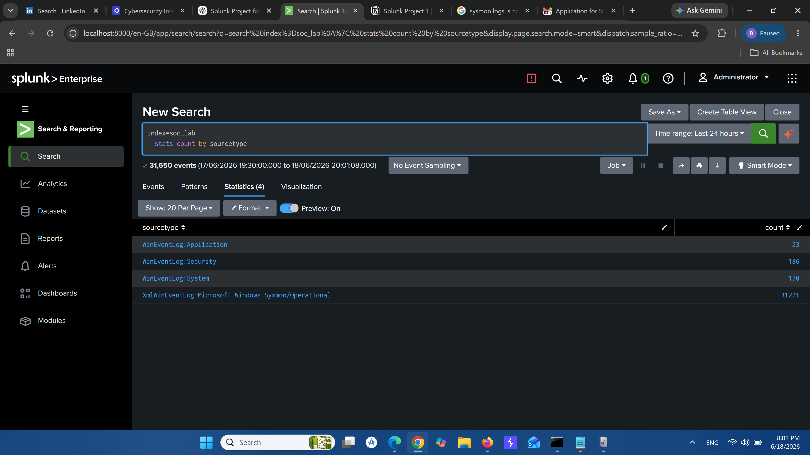
Add Data / Data Input
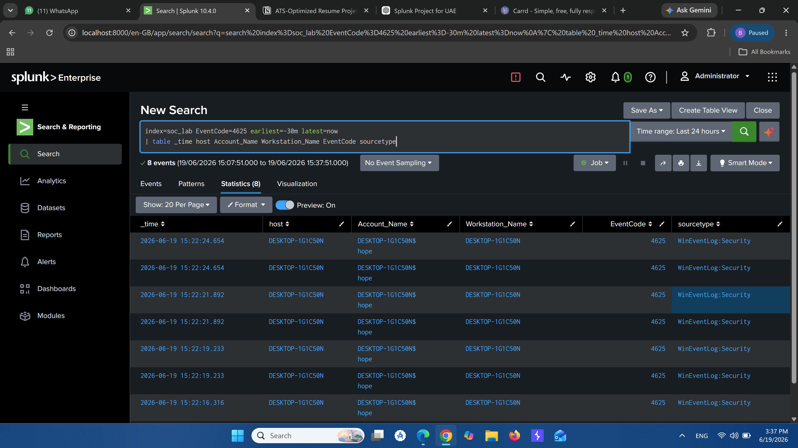
Search & Reporting
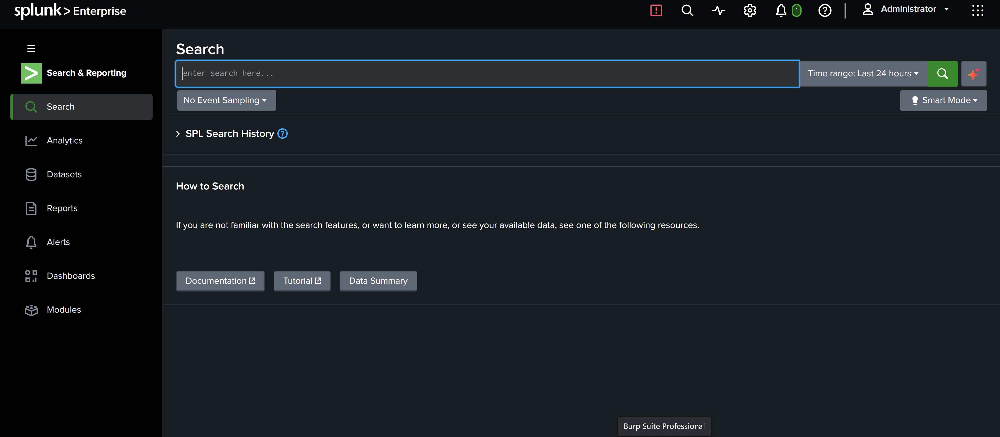
Detection Searches
```This section shows SPL detection searches created for authentication monitoring, service installation detection, PowerShell execution monitoring, Sysmon process creation, and local administrator group change detection.
Multiple Failed Login Detection Search
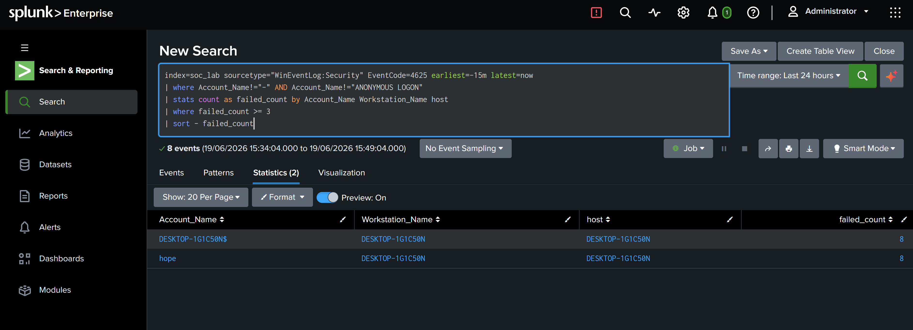
New Windows Service Installed Search
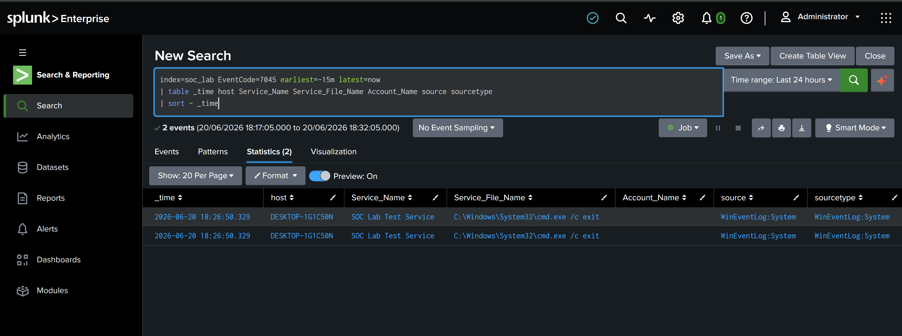
PowerShell Execution Search
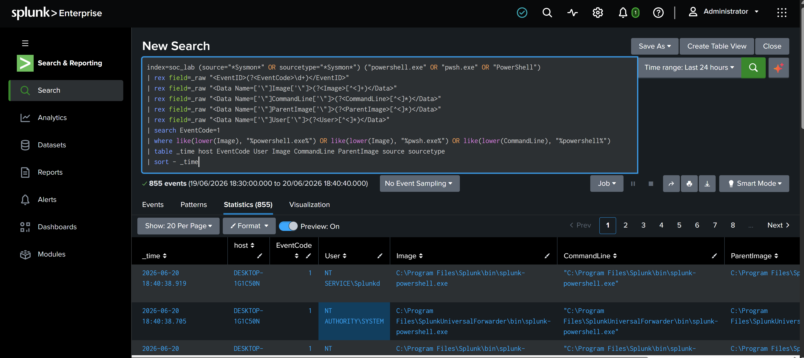
Sysmon Process Creation Search
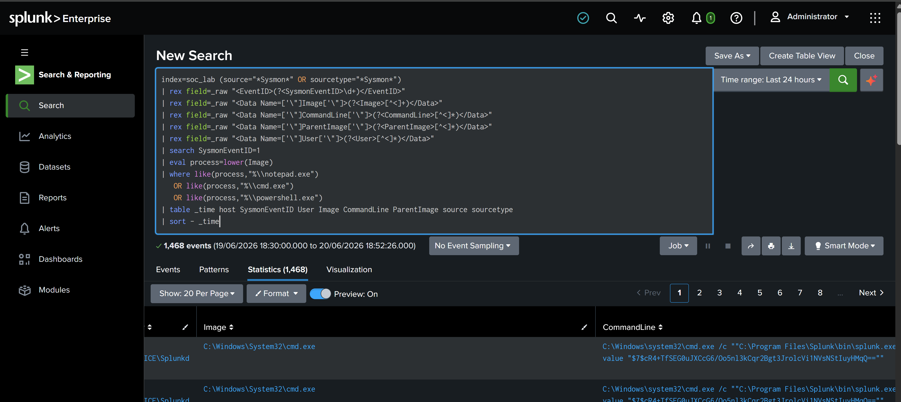
User Added to Local Administrators Group Search
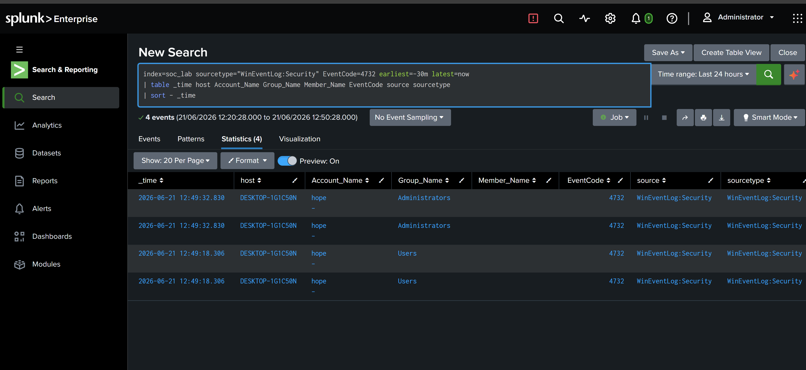
Triggered Alerts
```This section shows triggered alerts generated from the detection rules. These screenshots demonstrate that the SPL detections were configured as scheduled alerts and validated successfully.
SOC-LAB-001 - Multiple Failed Login Attempts
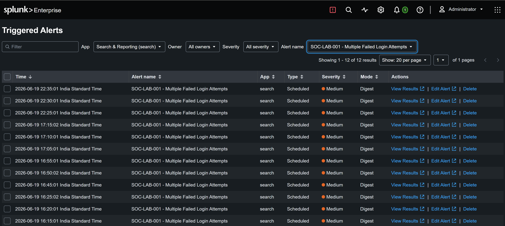
SOC-LAB-002 - Successful Login After Failed Attempts
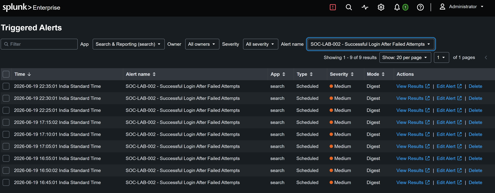
SOC-LAB-003 - PowerShell Execution Monitoring
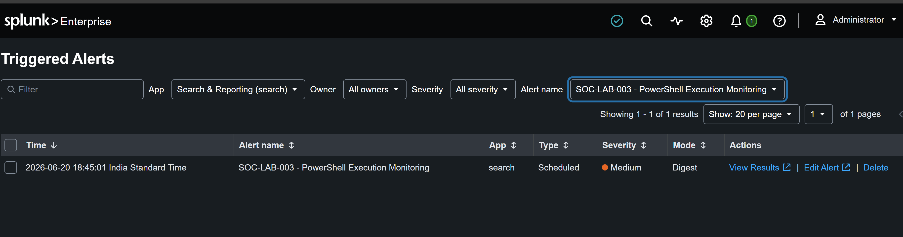
SOC-LAB-004 - Sysmon Process Creation Monitoring
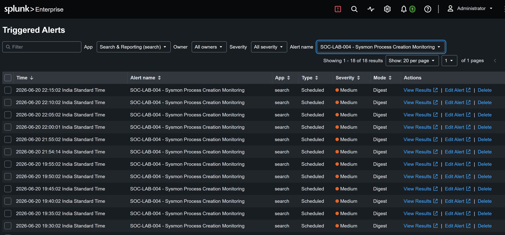
SOC-LAB-005 - New Windows Service Installed
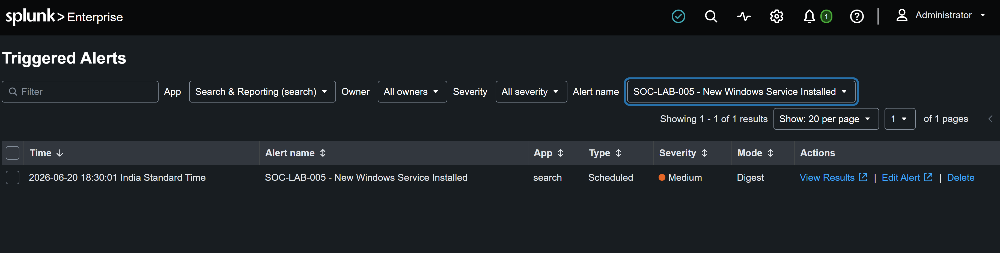
SOC-LAB-006 - User Added to Local Administrators Group
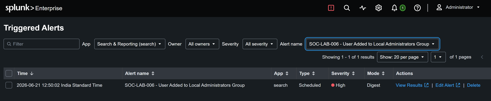
SOC Monitoring Dashboard
```This section shows the SOC Monitoring Dashboard created in Splunk. The dashboard provides visibility into security event trends, detection summary, failed logins, PowerShell execution, Sysmon process creation, new service installation, local administrator group changes, and top Windows Security event codes.
Dashboard Overview
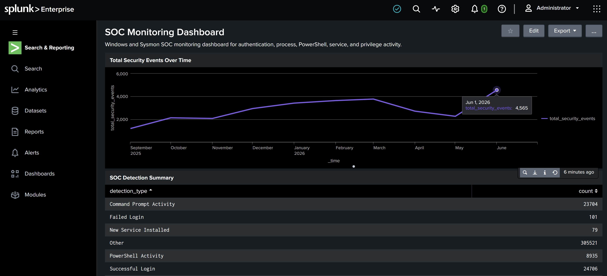
SOC Detection Summary
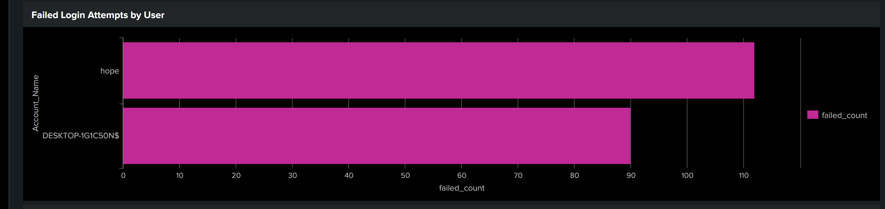
Failed Login Attempts by User
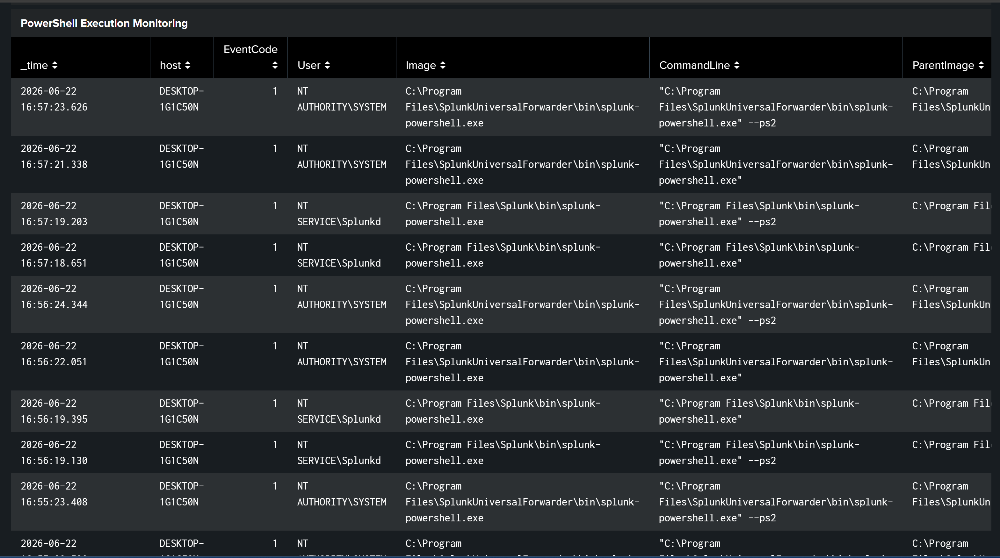
PowerShell Execution Monitoring Panel
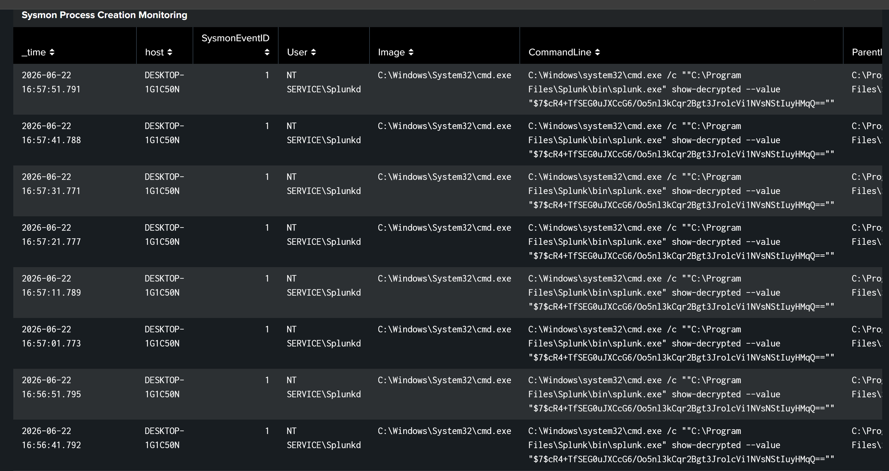
Sysmon Process Creation Panel
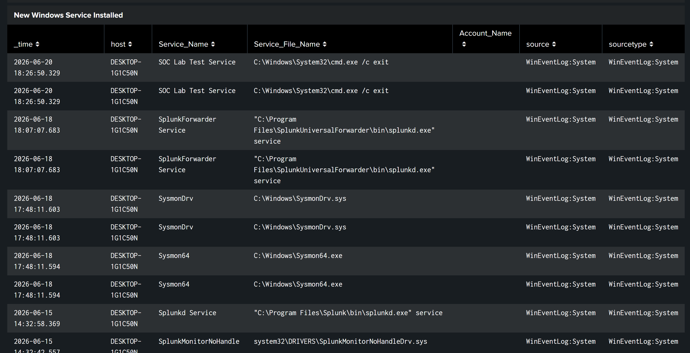
Service and Privilege Monitoring Panels
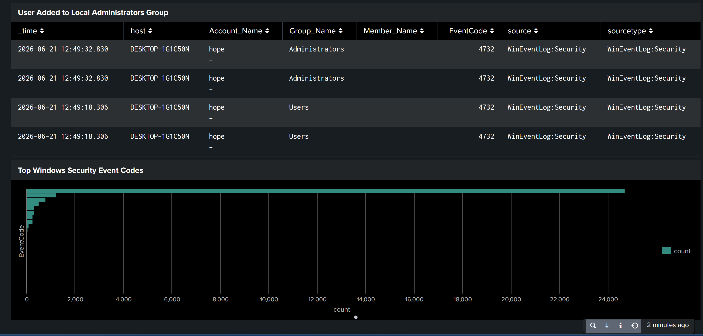
Project Notes
```This gallery provides visual evidence of the hands-on Splunk SOC lab. The screenshots can be used during SOC Analyst interviews to explain log ingestion, SPL detection logic, alert validation, dashboard creation, and basic incident investigation workflow.
```